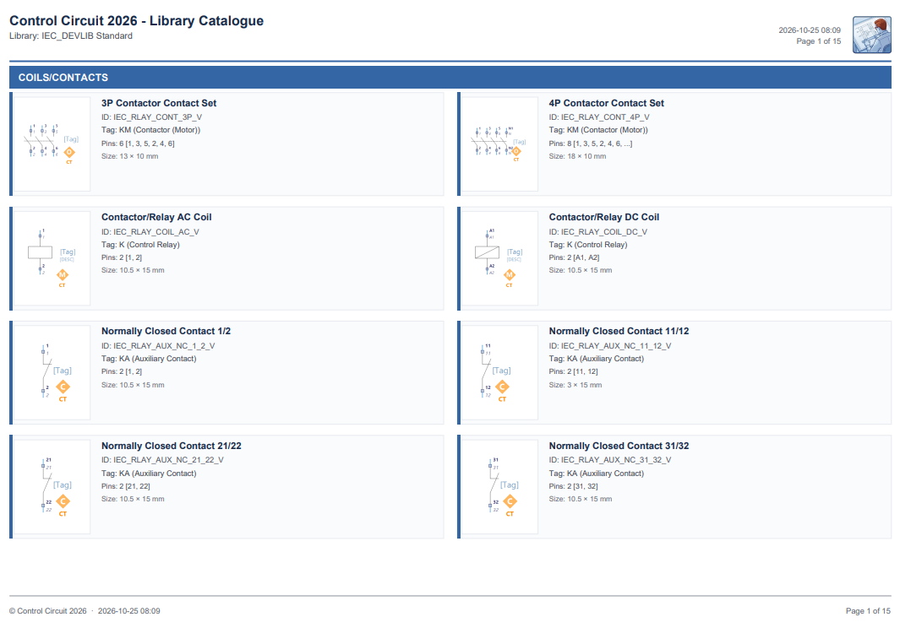
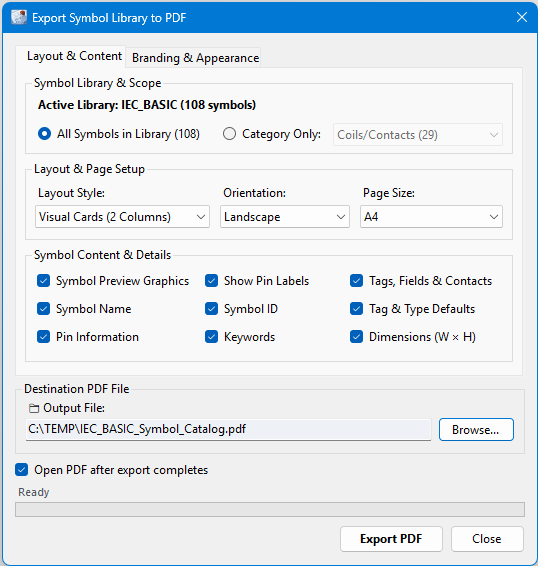
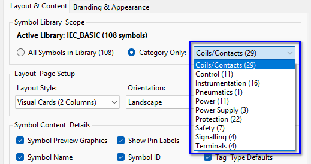
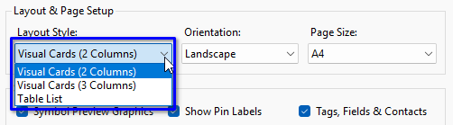
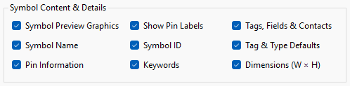
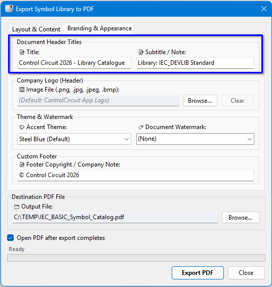
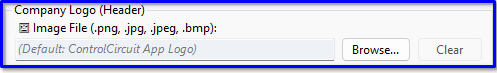
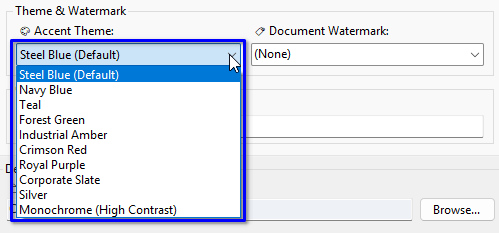
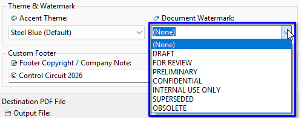

Control Circuit 2026 › Tutorial › Chapter 11
With a Pro licence we can export our Symbol Libraries to PDF in a professional format. It is good for customer review and for internal documentation.

With this tool we have access to a great many settings and customisations, such as branding, logo and colour themes.
To get started we need to be in the Symbol Editor. Select the library you want to export, then choose File › Export Library to PDF…

On the first tab, Layout & Content, we have these granular controls.
We can export the entire library, or just one Category within it. The drop down shows how many symbols each Category holds.

We can set the Layout Style as required: Visual Cards in two columns, Visual Cards in three columns, or a Table List. You can also choose the page Orientation and Page Size.

We can choose which aspects of the symbol data to include: the preview graphic, pin labels, tags, fields and contacts, the name, ID, tag and type defaults, pin information, keywords and dimensions.

And of course we can set the destination file path and filename, and whether the PDF opens when the export completes.
On the second tab, Branding & Appearance, we have additional options and customisations.

Use the Document Header Titles as required for your own purposes. The Title and Subtitle appear at the top left of every page.
In the Company Logo section you may Browse to your own logo image or mark, which will be displayed in the top right corner of every output page. Clear takes it back out again.

If you do not choose an image, the default Control Circuit logo is displayed instead.
You may select a colour theme. It colours the title, the Category banners and the edges of the symbol cards, so it is a subtle touch, but a choice nonetheless. There are ten to pick from, ending with a high contrast Monochrome that suits a black and white printer.

With the Document Watermark you can set custom text to be applied like an angled stamp across every page. There are also some default values in the list to choose from, such as DRAFT, FOR REVIEW and CONFIDENTIAL, or you can type your own.

The Custom Footer is a copyright or company note, printed at the foot of every page alongside the date and page number.
Finally, tap the Export PDF button to generate the report.
That is a quick introduction to the Symbol Library PDF Export. In the next chapter we look at Terminals and Terminal Instances, a foundational subject on which to build your circuit design.